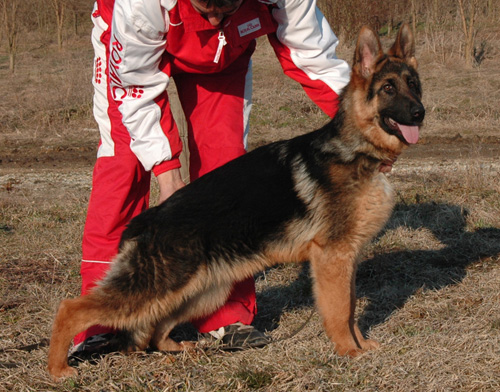

Očekujemo nova legla od sledećih kombinacija...pročitajte više>>>
XII Nacionalna izložba pasa svih rasa-CAC Senta 16.10.2011.
Skup Bemiki - razred mladih(9-18 meseci) - PRM
Sudija: Žižakov Vladimir
XII Specijalizovana izložba za nemačke ovčare-Ruma 13.11.2011.
Alka od Modrača - razred 3-6 meseci(ženke) - VI mesto
Sudija: Zlatko Ravlić(HR)
II Specijalizovana izložba za nemačke ovčare-Bogatić 02.10.2011.
Tora Bemiki - razred 9-12 meseci(ženke) - II mesto
Marica Bemiki - razred 9-12 meseci(ženke) - III mesto
Skup Bemiki - razred 9-12 meseci(mužjaci) - II mesto
Yugo von Media - razred 18-24 meseci(mužjaci) - III mesto
Sudija: Gabrijel Stibel(Nemačka)
Državno prvenstvo za nemačke ovčare-Morović 11.09.2011.
Marica Bemiki - razred 6-9 meseci(ženke) - II mesto
Skup Bemiki - razred 6-9 meseci(mužjaci) - II mesto
Tina Bemiki - razred 9-12 meseci(ženke) - V mesto
Tora Bemiki - razred 9-12 meseci(ženke) - IV mesto
Sudije: Gabriele Pettinaroli(ITALY)-za mužjake
Giuseppe Paffoni(ITALY)-za ženke
01.09.2011.
Vratili smo kuju Dolores von Media u odgajivačnicu Zwinger von Media.
Još jednom se zahvaljujemo gospodinu Branku Baranji na saradnji.
Očekujemo novo leglo od sledeće kombinacije...pročitajte više>>>
XX Nacionalna izložba pasa svih rasa-CAC Sremski Karlovci 16.07.2011.
Toni Bemiki - razred 6-9 meseci(mužjaci) - I mesto
Džek Bemiki - razred intermedia -CAC
Sudija: Srećko Kukić(HR)
IV Specijalizovana izložba za nemačke ovčare-Mileševo 25.06.2011.
Tora Bemiki - razred 6-9 meseci(ženke) - II mesto
Tina Bemiki - razred 6-9 meseci(ženke) - V mesto
Sudija: Giuseppe Paffoni(ITALY)
VII Nacionalna izložba pasa svih rasa-CAC Melenci 11.06.2011.
Tora Bemiki - razred 6-9 meseci(ženke) - I mesto
Yugo von Media - razred intermedia - CAC
Džek Bemiki - razred zrelih -CAC,BOB,BOG,BIS
Sudije: Nebojša Šurbatović,dr.Mahmud Al Dagistani
I Međunarodna izložba pasa svih rasa-CACIB Ada 05.06.2011.
Džek Bemiki - razred intermedia -CAC,CACIB,BOB
Sudija: Zoran Ćurčić(SRB)
XX Nacionalna izložba pasa svih rasa-CAC Mol 04.06.2011.
Džek Bemiki - razred intermedia -CAC
Sudija: Evica Mišić(SRB)
Specijalizovana izložba za nemačke ovčare-Šabac 29.05.2011.
Marica Bemiki - razred 3-6 meseci(ženke) - II mesto
Tina Bemiki - razred 6-9 meseci(ženke) - III mesto
Sudija: Gabriele Pettinaroli (ITALY)
XII CACIB izložba-Subotica 22.05.2011.
Yugo von Media - razred mladih -PRM,J.BIS
Sudija: Rodić Dušan
III Nacionalna izložba pasa svih rasa-CAC Srbobran 15.05.2011.
Yugo von Media - razred 9-18 meseci -PRM
Tina Bemiki - razred bebi 6-9 meseci - I mesto
Sudija: Žižakov Vladimir
Očekujemo 2 nova legla od sledećih kombinacija...pročitajte više>>>
Kupili smo mužjaka vrhunskog porekla od odgajivačnice nemačkih ovčara
Zwinger von Media
Yugo von Media
>>>pogledajte pedigre i više slika>>>
Slobodan je za parenje!!!

>>>pogledajte pedigre i više slika>>>
Ova kuja je u vlasništvu gospodina Branka Baranje vlasnika svetski poznate odgajivačnice nemačkih ovčara
Zwinger von Media
Dolores von Media će biti kod nas do septembra meseca što nam ujedno predstavlja čast i zadovoljstvo.
Zahvaljujemo se gospodinu Branku Baranji na saradnji.
III Nacionalna izložba pasa svih rasa-CAC Bačko Petrovo Selo 08.05.2011.
Tina Bemiki - razred bebi 6-9 meseci - I mesto,Puppy BIS-II mesto
Sudije: Andrić Slavoljub,Gujančić Dejan
Dženi Bemiki - razred mladih - PRM,J.BIS
Sudije: Andrić Slavoljub,dr.Mahmud Al Dagistani
II Specijalizovana izložba za Nemačke ovčare-Srbobran 17.04.2011.
Dolores von Media - razred 3-6 meseci- IV mesto
Tina Bemiki - razred 6-9 meseci - II mesto
Sudija: Gabriele Pettinaroli (ITALY)
XXIII Nacionalna izložba pasa svih rasa-CAC Kikinda 16.04.2011.
Yugo von Media - razred mladih 9-18 meseci - PRM,BOB,BOG,BIS,J.BIS
Sudije: Andrić Slavoljub,Veselinov Miloš
Dženi Bemiki - razred mladih 9-18 meseci -PRM
Sudija: Andrić Slavoljub
Tora Bemiki - razred bebi 6-9 meseci - I mesto,Puppy BIS-II mesto
Sudije: Andrić Slavoljub,Lazić Štefica
Džek Bemiki - razred intermedia -CAC
Sudija: Andrić Slavoljub

>>>pogledajte pedigre i više slika>>>
Slobodan je za parenje i prodaju